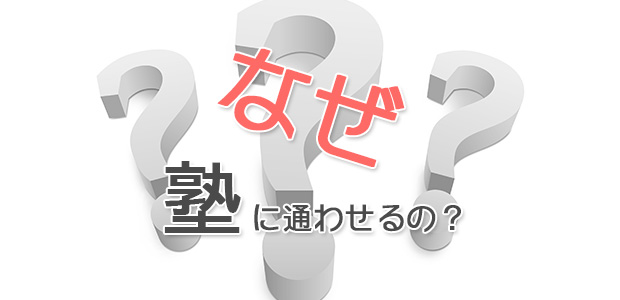

保護者の方と話していると、こんな会話がよくあります。
「先生！ ウチの子、今回の定期テスト、数学40点なんですよ！ どうしましょう」
”定期テストの成績20点アップ保証”などと銘打っている塾ならばいざしらず、一般的な進学塾（受験を目標とした塾）に通わせているならば、実はその問い方は「損」なのです。塾のほんとうの”おいしいところ”を逃してしまっているのですから。
それはたとえばチャーシュー麺がおいしいと評判のラーメン屋さんで、担々麺を頼むようなもの。メニューには載っていますから頼んでいけないわけではありませんが、おいしい担々麺を食べたければ、それが主力メニューになっているお店に行った方がお得。
でも、この例のように失敗してしまうことはよくありますよね。それはなぜでしょう？ 答えは簡単。自分が食べたいものが何か明確に決まっていないからです。もし家を出るときからチャーシュー麺を食べたいと決めていたら、必ずそのメニューがおいしいお店を探すはずです。でも、たいていはこう思っている。
「特に食べたいものはないけど、なんとなくラーメンかなぁ」
ここで一度考えてみてください。皆さんは「なぜ」子どもを塾に行かせるのですか？
「特に（明確な）目的はないけど、なんとなく行かせるか」
そう思っていませんか？ もちろん、そんなことはない！ と否定する人も多いでしょう。子供の学力を向上させるため。定期テストが悪いのに、子供がちっとも勉強しないから、などなど。
でも、それって「最終的なゴール」ですか？
あるいはこういう人もいるでしょう。受験に合格させるため。
もう一度ききます。それって「最終的なゴール」ですか？
子供は実に長い時間を塾で過ごします。子供にとって、塾は自分を取り巻く「もう一つの大きな世界」なのです。高校三年生になれば割り切って塾や予備校を道具として使えるかもしれません。でも、小学生や中学生にそれを求めるのは酷です。子供たちは必ず影響を受けます。人生で最も多感な時期に長い時間を過ごした塾から得るものは、学力だけではありません。勉強への取り組み方や友人関係、リアルな競争世界。今や学校ではこれらのものは学ぶことができなくなってしまいました。現代の子供たちは、実は「生き方」を塾で学んでいるのです。
もう一度ききます。
受験合格“だけ”が目的で塾に通わせますか？
本気の塾を本気で探そう
Freepikによるデザイン
実は「受験のために塾を探す」という親はかなり多くいます。もちろん塾側としても合格実績はなにより”わかりやすい”ですから、宣伝文句として多用するでしょう。しかし、それだけを基準に塾を選んで本当に大丈夫？
学齢に達したお子さんを持つ保護者の方の中には、すでに家を買われた方も多くいらっしゃると思います。まだの方は買うときのことを想像してみてください。
通勤に便利だから駅近で探そう。あるいは、広い部屋の間取りが作れるところを探そう。などなど、家を探すときの基準は様々です。これら、いくつもある条件のバランスを取り、値段と相談して決めたはず。
塾の合格実績はこの例で言えば「値段」のようなもの。とても重要で、かつわかりやすく数値化されています。しかし、皆さんは今後何十年もそこで暮らすことになる家を「値段」だけで決めますか？ そんなことは絶対にしないはず。
ではなぜ、塾は「合格実績」や「点数アップ」だけで決めるのでしょう？
塾は家とは違う。塾なんて子供にたいした影響はない。そうおっしゃるかもしれません。しかし、そんなことは絶対にありません。塾は子供の「もう一つの世界」なのです。毎週二日、三日と夕方から夜にかけて通うのですよ。子供たちはどれだけの時間を塾で過ごすのでしょう。影響がないとしたらそのほうが問題です。塾でやったことがなにも身についていないということですから。
ここまでいろいろ書いてきましたが、実は塾側もこれらの影響を軽く考えているところがとて も多い。家を売る場合の「立地」や「間取り」に比べて、「子供への影響」などというのはとても見えづらいものですからね。これをしっかり説明するためには 時間がかかります。そして、そんな説明しづらい（アピールしづらい）ものにかまけるくらいなら、手っ取り早い指標である合格や点数アップに力を注いだ方が よいと判断するわけです。
では、家のたとえで言うと「子供への影響」ってなんなの？ それは、一言で言えば、近隣の住環境そのものです。持ち家を買うことで幸せになるためには、まず住み心地の良さが重要です。どんなにきれいな町並みでも、毎晩周囲を暴走族が走り回っていたら台無しになってしまうでしょう。
ですから、塾を探すときは家を探すように、「本気」で探してください。いかに「住環境」がよい（気を配っている）塾を見つけられるかが、子供の成長の鍵になります。
塾の選び方で迷ったらこちらのコラムをご覧ください。
所長コラム「塾創立者が教える、塾選びで失敗しない方法」
点数”だけ”を手に入れることはできない
さて、いよいよ佳境に入ってきました。これまで塾が与える「子供への影響」の重要性を書いてきました。この「影響」とは具体的になんなのかをお話ししたいと思います。
勉強を楽しいと感じる姿勢。ずばりこれです。これは極言すれば塾で手に入れられるもっとも貴重な財産です。そして、学校ではきわめて手に入れづらいものでもあります。
小学校1年生から大学4年生まで、現代の子供は16年間に渡って学び続けなければなりません。このやらなければいけないものが「苦役」になるか「楽しみ」に なるかで、人生の最も多感な時期の充実度が決まります。皆さんが子供を通わせている、あるいは通わせようと考えている塾は、ここに心を砕いていますか？ 皆さんが軽い気持ちで「点数のために」塾に入れたら、それによって子供は16年の懲役刑に処せられるかもしれないのです。慎重に見極めてください。
塾講師の立場から言えば、この「学ぶことを楽しいと感じる姿勢」を作るのはそう簡単なことではありません。子供は鋭く本質を見抜きますから、講師の側が本当に楽しいと考えていないと、いくら口先だけで言ったところで、その姿勢は目的とは反対のメッセージとして伝わるだけでしょう。
点数はいわば「花」のようなものです。花は根と茎と葉があって初めて咲きます。現代のバイオ技術ではひょっとしたら実験室の中で花だけを作り出すことができるかもしれませんが、大体においてそのようないびつな生物はすぐに枯れ落ちてしまいます。
では、点数が花だとすれば、根と茎と葉はいったいなんでしょうか？ 根は衝撃、茎は好奇心、葉は知識です。何かに驚き、興味を引かれ、知識を習得しようとする。この一連の過程をテストで計った結果が点数になります。驚きも興味もないのに知識を覚えたとして、それがいったい何になるでしょう。実験室の培養花のようにすぐ枯れ落ちて終わりです。
「そんなことは分っているけど、実際問題としてうちの子には無理…。」
これも保護者の方がよくおっしゃる台詞。なぜ無理なのでしょう？ そもそも「無理」か「可能」かではありません。衝撃→興味→知識とプロセスを踏まないと花は”咲かない”のです。もし衝撃自体が自分の子供にはないと考えているとしたら、それはただ「驚かない」姿勢を押しつけてきただけです。「社会は暗記だからね。ごちゃごちゃ言わずに覚えなさい！」と親が言えば、子供にとって驚くことは「罪」になるでしょう。もし子供が勉強に驚きも興味もないのだとしたら、それは子供の問題ではなく、驚かないように、興味も示さないように生きる姿勢を親が教育してきたからです。
根と茎と葉を育てるのはとても大変です。毎日水をやって、観察をして、成長に適した環境を作る必要がありますから、時間も手間もかかります。しかし、そうやって咲いた花は「本物」です。保護者の皆さんが子供に贈ってあげられる最良のプレゼントになるでしょう。
ですから、根と茎と葉を本気で育てる塾を本気で探しましょう。それこそが、塾に通わせる本当の「意味」です。